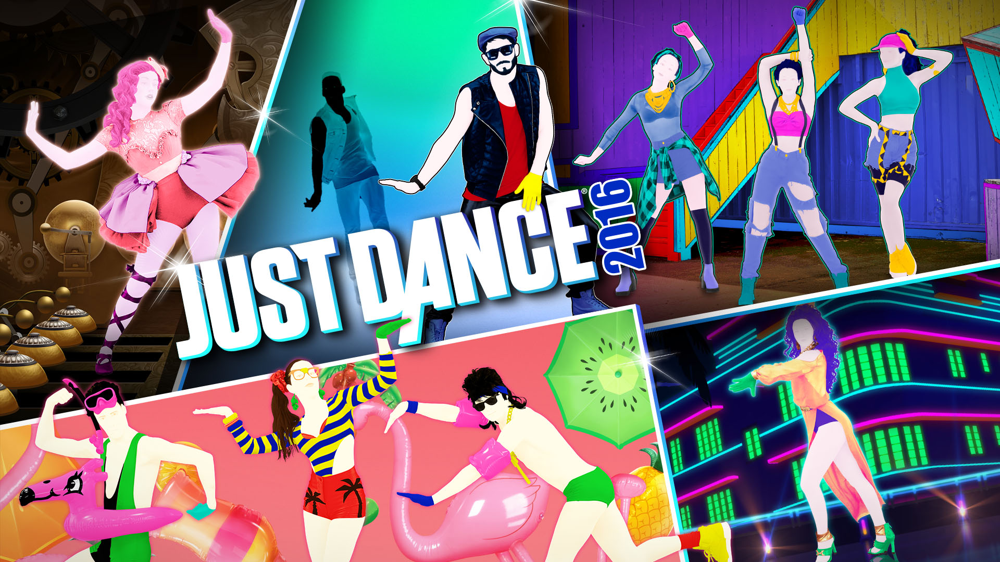
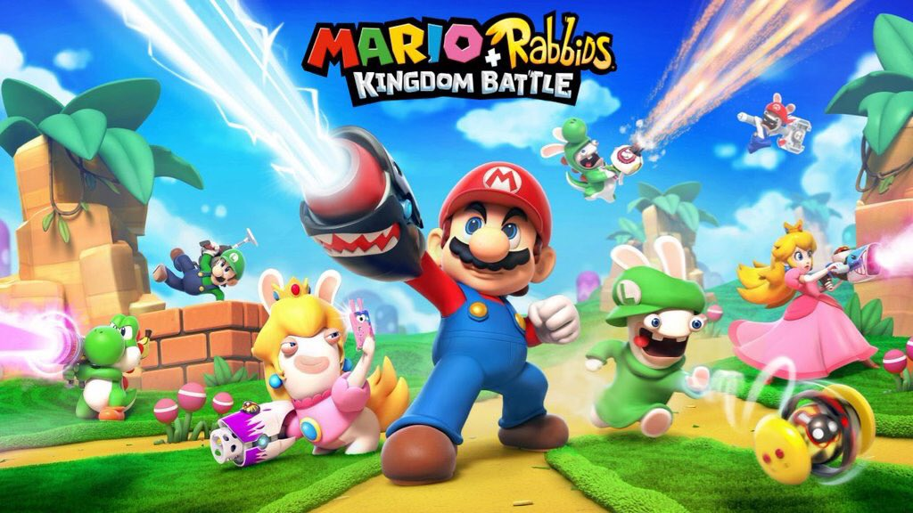
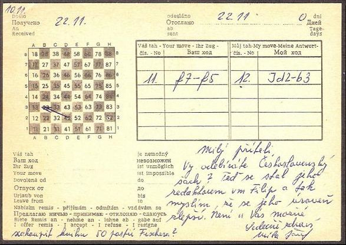
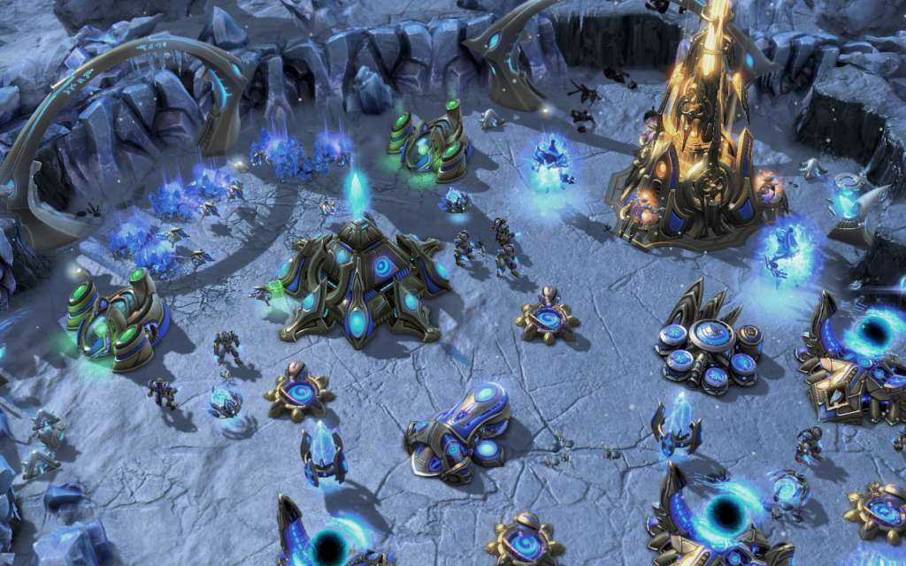
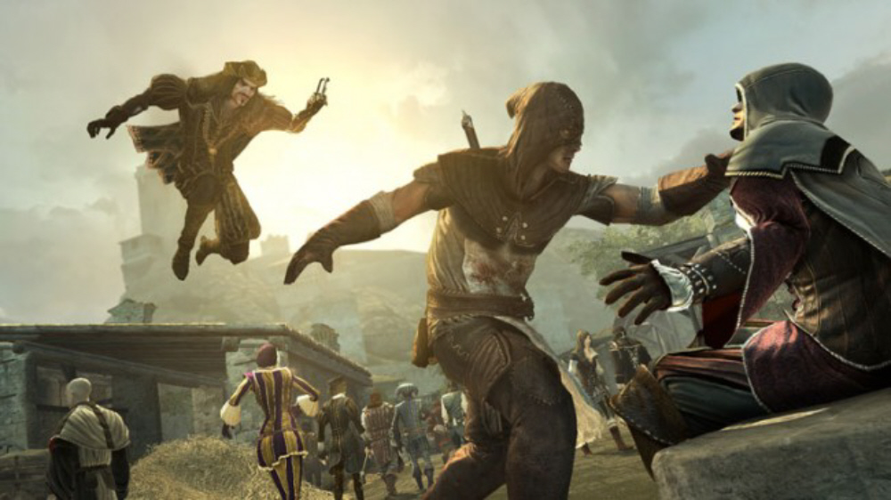
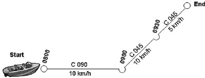
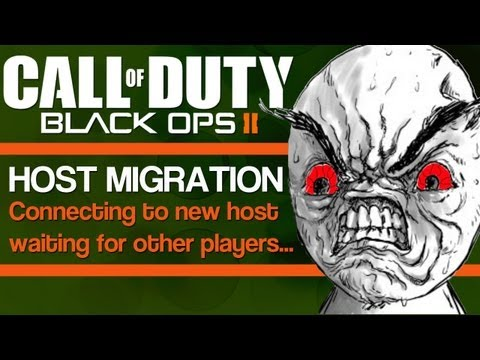
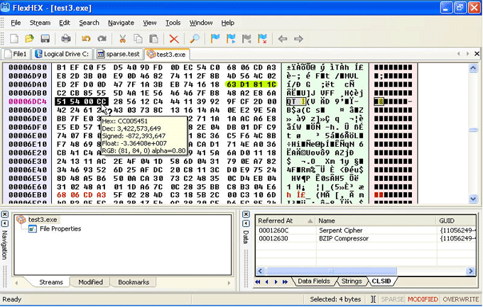
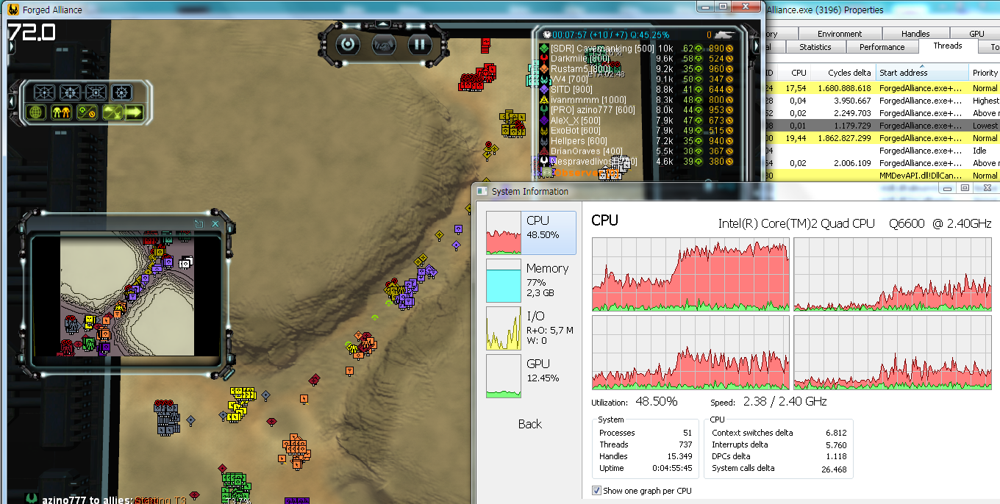

Game Networking
Friday, November 20th, 2020
About me
From the Alps
Study in Lyon, France
Study in Karlsruhe, Germany
Alt Ctrl: Living Orb
Alt Ctrl: Tea And Time
Demo: Those Who Leave
Work At Gameforge

Work At Ubisoft

Work At Ubisoft

Currently: Hue Dada ! Productions
Logical thinking

Message passing

Technical Foundations
Latency / Bandwidth
Latency / Bandwidth

Latency / Bandwidth
Protocols
UDP
TCP
Most RT games: Reliable UDP
Protocols for embedded software
FYI if you develop alt ctrl games
RS232
SPI
I2C
CAN
RT strategy games

Requirements
Fairness
Determinism
Command Design Pattern

Without
Command Design Pattern

With
Passive client

Side note: Undo Redo

RT simulation games

Requirements
Fun
Flow
No frustration
Client prediction

Dead reckoning

Object ownership
Physics simulation
Topologies
One Server - Many Clients
+ Central authority
- Heavy load
Peer to Peer
+ Distribute the load
- More complex to synchronize
A mix of both?
For instance:
Host for gameplay events
P2P for chat
Host migration

A world without firewalls

NAT
STUN

TURN

Services
"Around the game"
Local service: Discovery
Online services
No RT requirement
TCP / HTTP are relevant
Online service: Profile
Requires a database
Requires a profanity checker
Requires a storage space for the picture
Online service: Matchmaking
With a matching algorithm
Requires a profile service
Serialization
Transforming objects to/from memory buffers
Why?
Indirections (pointers)
Endianness
Optimisations, perhaps
C++
Lack of support (some RTTI though)
Usually: custom solutions
C++: custom solution
struct CharacterProfile
{
string name;
int level;
void Serialize(Serializer &serializer);
};
void CharacterProfile::Serialize(Serializer &serializer)
{
serializer.declare("name", name);
serializer.declare("level", level);
}
C++: Unreal Engine 4
UCLASS()
class GAME_API UCharacterProfile : public UObject
{
GENERATED_BODY()
public:
UPROPERTY(EditAnywhere, BlueprintReadWrite, Category = "Switch Variables");
string name;
UPROPERTY(EditAnywhere, BlueprintReadWrite, Category = "Switch Variables")
int level;
};
Rely on the Unreal Header Tool
C#
[Serializable]
public class CharacterProfile
{
public string name;
public int level;
}
public void Load()
{
CharacterProfile profile;
BinaryFormatter formatter = new BinaryFormatter();
using (FileStream stream = File.OpenRead(filePath))
{
profile = formatter.Deserialize(stream) as CharacterProfile;
}
}
C#: Unity
(e.g. when writing custom editors)
void OnEnable()
{
name = serializedObject.FindProperty("name").stringValue;
level = serializedObject.FindProperty("level").intValue;
}
Binary format

Semi-structured format
Example: JSON
{
"characterProfile": {
"name": "John Doe",
"level": 42
}
}
Tests
Unit tests
Calculator calc;
EXPECT_EQ(6, calc.execute("2 * 3"));
$ ./tests
PASSED
total 42
passed 42
time 9ms
$
Integration tests
For gameplay
VehicleUnit unit{ position: {4, 7}, speed: 10 };
game.Add(unit);
MoveCommand cmd{ target: {5, 2} };
game.Execute(cmd);
EXPECT_EQ({4, 7}, unit.position);
game.Update(1.0f);
EXPECT_EQ({5, 2}, unit.position);
Integration tests
For web services
get('/profile/johndoe')
.expect(404);
post('/profile/', ...)
.expect(201);
get('/profile/johndoe')
.expect(200);
put('/profile/johndoe', ...)
.expect(204);
get('/profile/johndoe')
.expect(200);
delete('/profile/johndoe')
.expect(204);
get('/profile/johndoe')
.expect(404);
Other automated tests

Manual tests
Optimization
Jackson's rules of program optimization
Rule #1: Don't do it
Rule #2 (for experts only): Don't do it yet
Am I looking in the right direction?
Architecture
Modelisation
Data packet optimization
Network overhead
Serialization optimization
Example: sending a number (64 bits)
Send the full value (64 bits)
Add one bit to tell whether the value is zero (1 or 65 bits)
Only send the less significant bits (from 6 to 70 bits)
Maths tricks
float: do not send least significant mantissa numbers
normalized vec3: only send two components
rotation mat33: transform to a quaternion, only send three components
Gameplay
Do not wait for the response
Network camera
P2P: better ownership distribution
Infrastructure
Scalability
Being able to spread the load
No Single Points of Failure
Redundancy (load balancers, database clusters...)
Instrumentation
Being able to scale
Deployment
Environments
Being able to deploy several versions
Development, Tests, Production...
How to switch?
Logs
Useful for debugging the servers...
Metrics

Monitoring
From metrics to alerts
Load tests
Back-Office
Security
Firewall
HTTPS
Authentication token
Some last tips
Developing a networked game
Architecture
Modelisation
Asynchronous
Logs & metrics
Working as an online programmer
Logical thinking
Linux / terminal
Web development